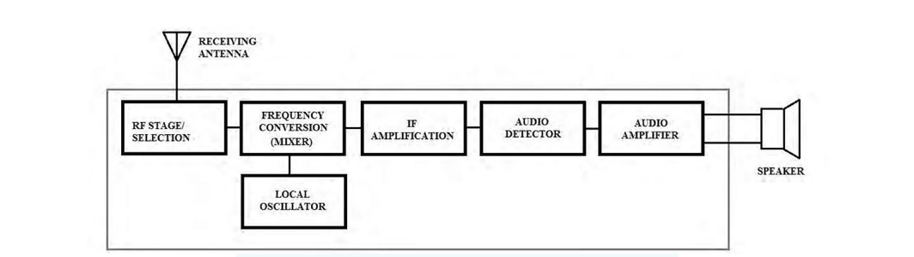
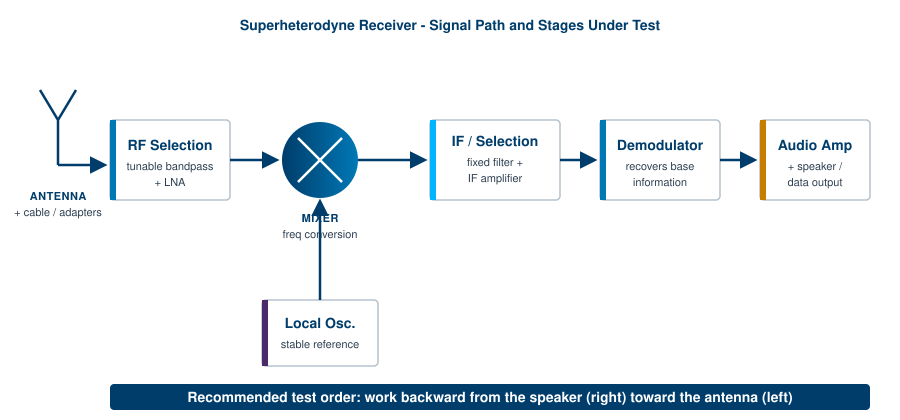
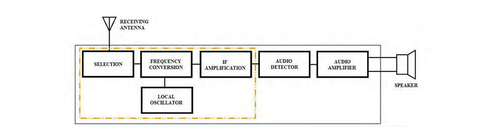
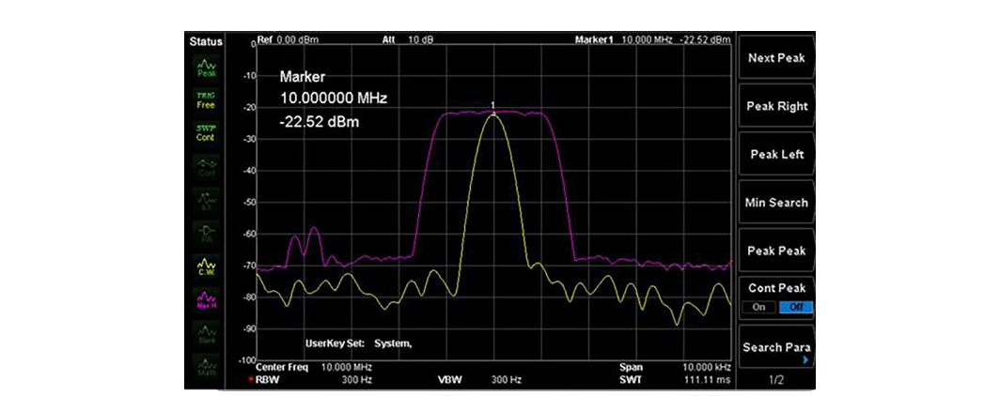

A receiver is the half of an RF link that most people never see and almost everyone depends on. Its job is to pull a wanted signal out of a crowded band, reject everything else, and recover the information riding on the carrier. The familiar example is an FM radio. When you set the dial, you tune the receiver to favor one carrier frequency, and the radio demodulates the audio from that carrier and drives a speaker.
The same architecture appears across analog and digital systems. AM and FM radios are analog. Wi-Fi, Bluetooth, and Zigbee are digital. They differ in how they demodulate and what they do with the recovered data, but they share the same chain of stages, and they fail in the same handful of ways. This chapter walks that chain stage by stage, gives a practical functional test for each block, and closes with the three figures of merit that decide whether a receiver is good enough for its job: sensitivity, selectivity, and intermodulation performance.

The block diagram above shows the elements of a typical receiver. Other receiver types share this skeleton. The major differences are the demodulation method (analog versus digital) and the output device (a speaker versus a data interface). A second, idealized view of the same chain appears below, with the stages labeled in the order this chapter tests them.

The strategy in this chapter is to step backward through the receiver, starting at the speaker or data output and ending at the antenna. In practice the stages can be tested in any order. Working backward has one strong advantage: once the output stage is known good, you can use it as a live monitor while you test everything upstream. A failed mixer or local oscillator becomes audible immediately, which turns troubleshooting into a fast, observable process rather than a series of disconnected measurements.
Many of the blocks inside a receiver are filters and amplifiers, and those can be characterized in isolation using the techniques covered earlier in this book. When a section calls for a filter sweep or a gain measurement, the methods from the filter and amplifier chapters apply directly. This chapter focuses on the functional tests that confirm each stage does its part in the chain, plus the system-level metrics that matter once the chain is whole.
Before any of that, a word on safety and preparation. Study the schematic for the receiver under test whenever one is available. Identify high-voltage nodes, supply rails, and any energy-storage components, and make sure you are shielded from them before you probe anything. A receiver is usually a low-power device on the signal side, but the power supply behind it may not be. Treat the unit as live until you have confirmed otherwise.
Going Deeper - Why "backward" beats "forward"
If you test forward from the antenna, every measurement depends on instruments you trust but on a receiver chain you do not yet trust. A bad reading upstream could be the stage you are testing, or any stage downstream that you have not reached. Testing backward inverts that. Each stage you clear becomes part of your test setup for the next one, so the known-good portion of the receiver grows with every step and the unknown shrinks.
The speaker converts electrical signals into sound waves. It is the simplest block to verify, and on an audio receiver it is the natural place to start the backward walk. The fastest test is to drive the speaker terminals directly with a function generator. Function generators produce defined waveforms (sine, square, ramp) at a set frequency and amplitude. They are typically low power, under one watt, which is enough to confirm that most simple speakers move air.
Required hardware
Test steps
A healthy speaker changes its output noticeably as you change the input frequency and amplitude. If there is no sound at all, the driver or its wiring is likely damaged, and the part may need replacement.
The audio amplifier takes the low-level signal coming out of the demodulator and raises its power until it can drive the speaker. When this stage fails, the symptom is usually low or inaudible output even though everything upstream is working. The test below is a functional check: it confirms that the amplifier accepts a small input and produces a larger, clean output. Full characterization of distortion, bandwidth, and output power is a deeper exercise and is beyond the scope of this overview.
Required hardware
Test steps
The output frequency should match the input, and the output amplitude should be higher: that is the gain you are looking for. Sweep the input frequency and amplitude and watch the output track. Excessive distortion, the wrong frequency, or added noise points to a stage that needs repair or replacement.
Going Deeper - Watching for clipping
Push the input amplitude up gradually and watch the peaks of the output sine on the scope. When the rounded peaks start to flatten into plateaus, the amplifier has run out of headroom and is clipping against its supply rails. Clipping is the most common cause of "the volume is loud but the sound is harsh." Note the input level where it begins. That number, compared with the supply voltage and the rated output, tells you whether the amplifier is behaving or sagging early.
The intermediate frequency (IF) and selection stages do the heavy lifting of a superheterodyne receiver. Together they reject the unwanted signals the antenna collected, pass only the wanted channel, and hand a clean, fixed-frequency version of it to the demodulator. The IF is a single, constant frequency chosen by design, and because it never moves, the filter that defines the channel can be built once and built well. That is the central trick of the superheterodyne architecture: tune the front end and the local oscillator, but do the precise filtering at a fixed IF where it is easiest.

Not every receiver looks exactly like this. Some designs add hardware, and many modern receivers integrate several of these blocks into a single chip or software-defined stage. The functional intent is the same regardless of packaging: select the channel and convert it to a frequency the back end can handle.
By the time a signal reaches the IF section, its amplitude can be small, so receivers usually include an IF amplifier to restore level before demodulation. Testing it is a matter of feeding a known modulated signal at the IF into the amplifier input and measuring what comes out.
Required hardware
The source may be one instrument or a combination, for example a baseband pattern or function generator feeding the modulation input of an RF source.
Test steps
Going Deeper - Working at very low levels
IF input signals are often very small, on the order of -100 dBm. If your RF source cannot reach levels that low, add a calibrated external attenuator at its output to bring the signal down accurately. Attenuation also protects your instruments at the other end. If the amplifier output could be large enough to overdrive or damage a spectrum analyzer input, insert a pad ahead of the analyzer. A few decibels of known attenuation is cheap insurance against a costly front-end repair.
The local oscillator (LO) supplies the reference frequency that the mixer uses to convert the incoming RF down to the IF. Its stability sets the receiver's tuning accuracy. A good LO holds its frequency across temperature swings and over time. A drifting or noisy LO makes the receiver tune to the wrong place, lose the channel, or fail outright, so the LO is one of the first suspects when a receiver wanders off station.
Testing the LO is direct: measure its output frequency and amplitude with a spectrum analyzer, an oscilloscope, or a frequency counter, then compare against the design specification.
Required hardware
Test steps
If the analyzer offers a max-hold trace, turn it on and watch the LO over time. As discussed earlier in the book, a max-hold trace keeps the highest amplitude seen at each frequency point across successive sweeps. Over a few minutes it paints a picture of where the LO has been, which makes drift obvious at a glance.

In the figure, the spread of the max-hold trace shows that this oscillator's frequency has drifted from where it started. A narrow, stable max-hold trace would indicate a well-behaved LO. A broad smear, or a trace that walks steadily in one direction as the unit warms up, is a drift problem worth chasing down before it shows up as intermittent reception in the field.
Going Deeper - A fast LO substitution trick
If you suspect the LO is dead or badly off but want to keep testing the rest of the receiver, substitute a signal generator set to the correct LO frequency and amplitude in place of the failed stage. With a clean reference injected, the mixer and everything downstream can be exercised normally. This isolates the fault to the LO and lets you confirm that the rest of the chain is healthy before you commit to repairing or replacing the oscillator.
The mixer is where conversion happens. It combines the incoming RF signal (carrier plus modulation) with the LO and produces sum and difference frequencies. The difference term is the IF, and the downstream filters keep it while discarding the rest of the mixing products. This is the same principle behind the swept superheterodyne spectrum analyzer covered earlier: a mixer plus a known LO moves a band of interest to a fixed IF where it can be measured cleanly.
To test the mixer, inject a modulated RF signal at the input and look for a properly converted output at the IF. An RF source with modulation, or an RF source driven by a separate function generator on its external modulation input, provides the stimulus. A spectrum analyzer (or the verified downstream sections, if they are working) reads the result.
Required hardware
This may be a single instrument or a standalone generator paired with an RF source. Many RF sources accept an external modulation input, which lets you apply a realistic modulated carrier rather than an unmodulated tone.
Test steps
Confirm that the converted output lands at the expected IF and carries the modulation intact. The mixer also produces image and spurious products, so look for unexpected tones near the IF. Strong, unwanted mixing products that the IF filter cannot reject point to a conversion or filtering problem.
Going Deeper - The image frequency
A mixer cannot, by itself, tell the difference between two input frequencies that are equidistant from the LO. Both convert to the same IF. One is the wanted signal, the other is its image, and the image sits at a frequency offset from the wanted signal by twice the IF. That is precisely why the RF selection stage exists: its job is to attenuate the image band before it ever reaches the mixer. When you see an unexplained signal at the IF that tracks the dial in the wrong direction, suspect image response and check the front-end filter.
Going Deeper - Watch the levels here too
Like the IF stage, the signals at the mixer input are often very small, around -100 dBm. If your source cannot reach those levels, add a calibrated attenuator to set the input accurately. Use attenuation on the output side as well to protect a spectrum analyzer input if the converted signal could be strong enough to damage it.
The RF selection stage is the receiver's first line of filtering. It is a tunable bandpass filter that accepts a defined band and rejects frequencies outside it. The band moves with the dial, so the selection stage tracks whatever channel the user has chosen. Its rejection skirts decide how well the receiver ignores strong neighbors and, as noted above, how well it suppresses the image frequency before the mixer.
The cleanest way to test it is with a spectrum analyzer that has a tracking generator. The tracking generator sweeps a source across the band in lockstep with the analyzer, so the analyzer plots the filter's response directly: passband, skirts, and rejection in one trace.
Required hardware
Test steps
A good selection stage passes in-band frequencies and rejects out-of-band signals, producing the familiar bandpass shape. Re-tune the receiver to other channels and repeat to confirm the filter tracks correctly across its range.
Going Deeper - Move the scan with the dial
Each time you change the tuner to a new channel, change the analyzer's scan range to match. If you leave the analyzer parked on the old band while the filter has moved, you will see what looks like total rejection and may wrongly condemn a healthy stage. Keep the sweep window centered on wherever the selection filter is currently tuned.
The antenna collects RF energy from the air and delivers it through cable and connectors to the receiver. Antennas come in many forms. Some are general purpose, like the "rabbit ear" dipoles used with older television sets. Others are cut for a specific wavelength, shaped for directional gain, or ruggedized to survive harsh environments. Whatever the form, the antenna's job is to couple electromagnetic energy between free space and the receiver front end as efficiently as possible.
A great deal of receiver trouble starts here, and a great deal of it is visible. A careful visual inspection of the antenna, the mounting hardware, the cable, and every connector often finds the fault before any instrument is connected. Outdoor antennas and cabling endure wide temperature swings, moisture, ultraviolet exposure, and physical stress. Corrosion and weathering raise contact impedance, create intermittent or open connections, and degrade the cable's shielding and loss. Look for green or white residue on connectors, cracked or kinked cable jackets, water ingress at junctions, and loose or over-tightened fittings.
Beyond inspection, the antenna and feed line can be characterized with the methods covered earlier in the book. A vector network analyzer measures return loss or VSWR at the connector to confirm the antenna is well matched at its operating frequency, and a time-domain reflectometer or the distance-to-fault function on a cable analyzer pinpoints the location of an open, short, or crushed section along the run. A mismatched or lossy feed line wastes signal the front end can never recover, so a few minutes confirming the match and the cable's integrity is among the highest-value checks in the whole chain.
Going Deeper - Adapters are not free
Every adapter and connector in the path adds a small amount of loss and a small impedance discontinuity, and the effect grows with frequency. A stack of adapters that is harmless at HF can noticeably degrade a measurement at microwave frequencies. Use the fewest, highest-quality adapters you can, keep them clean and torqued correctly, and when a measurement looks marginal, suspect the connector stack before you suspect the antenna.
Functional tests confirm that each stage works. Three system-level metrics decide whether the whole receiver is good enough for its job: sensitivity, selectivity, and intermodulation performance. These are the numbers that appear on a datasheet and the numbers a buyer compares across products, so it is worth understanding exactly what each one means and how it is measured.
Sensitivity is the smallest signal a receiver can usefully recover. A more sensitive receiver hears weaker signals, which translates directly into range, reliability at the edge of coverage, and the ability to work with small or distant transmitters. Sensitivity is ultimately limited by noise. A receiver adds its own noise to whatever arrives at the antenna, and once a wanted signal sinks into that noise it can no longer be demodulated reliably.
Two definitions dominate. For analog and general-purpose receivers, sensitivity is often quoted as a minimum signal level for a given signal-to-noise ratio, or by the related SINAD figure (signal plus noise plus distortion, divided by noise plus distortion), commonly the input level that yields 12 dB SINAD. For digital receivers, sensitivity is the input power that produces a specified bit error rate (BER) or packet error rate, for example the level at which a Wi-Fi or Bluetooth link still decodes correctly. In both cases sensitivity is a power level, expressed in dBm, and a smaller (more negative) number is better. A receiver rated at -110 dBm is more sensitive than one rated at -95 dBm. [1]
The noise floor sets the limit. The thermal noise available at the input of any system at room temperature is about -174 dBm per hertz of bandwidth. Multiply by the bandwidth and add the receiver's own noise figure, and you have the noise floor the wanted signal must rise above. The relationship is worth committing to memory:
Noise floor (dBm) = -174 + 10 x log10(bandwidth in Hz) + noise figure (dB)
For a 1 MHz channel, the thermal term alone is -174 + 60 = -114 dBm. Add a typical 6 dB noise figure and the floor sits near -108 dBm. To demodulate, the wanted signal must clear that floor by the required SNR for the modulation in use. This is why narrowing the bandwidth improves sensitivity (less noise is admitted) and why a low noise figure, set largely by the first amplifier in the chain, is so valuable. The chapter on noise figure covers that first-stage dominance in detail. [2]
Measuring sensitivity. Connect a calibrated signal generator to the antenna input through known cabling and attenuation. Set the generator to the correct frequency and modulation, then reduce its level until the receiver's output just meets the pass criterion: a target SINAD for an analog set, or a target BER for a digital one. The generator level at that threshold, corrected for cable and connector loss, is the measured sensitivity. Accuracy depends on knowing the path loss precisely, so calibrate the cabling and pads first.
Selectivity is the receiver's ability to pick out the wanted channel and reject signals on nearby frequencies. A selective receiver can recover a weak station sitting right next to a strong one. A receiver with poor selectivity lets the strong neighbor bleed through, desensitize the front end, or mask the wanted channel entirely. Selectivity is set largely by the IF filter, whose shape determines how sharply the receiver transitions from "pass" to "reject" as you move away from the tuned frequency.
The most common figure is adjacent-channel selectivity (or adjacent-channel rejection): how much stronger an adjacent-channel signal can be, in decibels, before it degrades reception of the wanted channel by a defined amount. A value of 60 dB means the receiver tolerates an adjacent signal 60 dB stronger than the wanted one. Selectivity is also described by the IF filter's shape factor, the ratio of its bandwidth at 60 dB down to its bandwidth at 6 dB down. A shape factor close to 1 describes a steep, near-ideal filter. A larger shape factor describes lazy skirts that let neighbors through. [3]
Measuring selectivity. Use two signal generators combined into the antenna input. Set the first to the wanted channel at a fixed reference level. Set the second to an adjacent channel and raise its level until the wanted channel's quality drops to the defined threshold. The difference between the two levels is the adjacent-channel rejection. Sweeping the second generator across offsets maps the full selectivity curve and exposes any spurious responses where rejection unexpectedly collapses.
Real receivers are not perfectly linear. When two or more strong signals reach a nonlinear stage, that stage generates new frequencies that were never transmitted. The troublesome products are the third-order intermodulation (IM3) terms. For two input tones at frequencies f1 and f2, the third-order products fall at 2f1 minus f2 and 2f2 minus f1. The reason these matter more than any other product is their position: they land very close to the original tones, often right inside the wanted channel, where no filter can remove them. They look exactly like real signals, and they can mask a weak wanted signal or create a phantom one.
Third-order products have a defining behavior. For every 1 dB the input tones rise, each IM3 product rises by about 3 dB. They grow three times faster than the signals that create them. Plot output level against input level on a log scale and the fundamental rises with a slope of 1 while the IM3 product rises with a slope of 3. Extend both lines and they cross at a single point. That intercept is the third-order intercept point, IP3, and it is the standard single-number measure of a receiver's linearity. A higher IP3 means the receiver tolerates stronger interferers before intermodulation becomes a problem. IP3 referred to the input is IIP3; referred to the output it is OIP3, and the two differ by the gain of the stage. [3]
IP3 is theoretical: real devices saturate and never actually reach the intercept. It is useful precisely because it lets you predict IM3 at any input level from one number. A handy relationship: the IM3 product level, in dBc below either fundamental, is approximately twice the difference between IIP3 and the input tone level. Push the inputs 10 dB closer to IIP3 and the IM3 products climb 20 dB relative to nowhere good. This is why a high IP3 front end matters in crowded bands, where several strong signals share the antenna with the weak one you actually want.
Measuring IP3. Combine two equal-level tones, closely spaced and inside the receiver's passband, into the input through a combiner that keeps the two sources isolated from each other. Set both tones well below compression so the receiver stays in its linear region. Measure the output level of one fundamental and the level of the corresponding IM3 product on a spectrum analyzer. Then compute the input-referred intercept:
IIP3 (dBm) = input tone level + (delta / 2)
where delta is the difference in decibels between a fundamental and the IM3 product at the output. Repeat at a second input level to confirm the IM3 products move with the expected 3 dB-per-1 dB slope, which validates that the measurement was taken in the linear region and not near compression. [4]
Going Deeper - The three metrics pull against each other
These figures of merit are linked, and improving one can cost another. Widening the IF filter to capture a wide digital signal admits more noise, which raises the noise floor and worsens sensitivity, while also relaxing selectivity. Adding front-end gain to improve sensitivity can drive later stages closer to compression and degrade IP3. A high-IP3 design often runs higher bias current and dissipates more power. Receiver design is the art of balancing these three against the real signal environment, and receiver test is how you prove the balance was struck correctly.
BNC in Practice - One bench, three metrics
Sensitivity, selectivity, and IP3 are all measured with the same core toolkit: one or two calibrated signal generators, a spectrum analyzer, and known, characterized cabling and attenuators. Berkeley Nucleonics builds the signal sources and analyzers used for these measurements; verify the specific models and specifications against the current datasheet before quoting numbers. The discipline that matters most is not the instrument, it is the calibration of the path: know your cable loss and your pad values, and your sensitivity and IP3 numbers will be trustworthy.
Take it interactively. The quiz lives on its own page with hidden answers - write your attempt first (even four characters works), then reveal. Self-graded. About 10 minutes.
Or read the questions and answers inline below (preserved for print and offline use).
[1] ETSI / IEEE receiver sensitivity definitions, including 12 dB SINAD and BER-based methods for digital systems. Verify before publication.
[2] Thermal noise power density of -174 dBm/Hz at approximately 290 K (room temperature); standard noise-floor relationship. Verify before publication.
[3] Definitions of adjacent-channel selectivity, IF filter shape factor, and third-order intercept point (IP3/IIP3/OIP3) from standard RF engineering references. Verify before publication.
[4] Two-tone intermodulation test method and the IIP3 = input level + (delta / 2) relationship. Verify before publication.